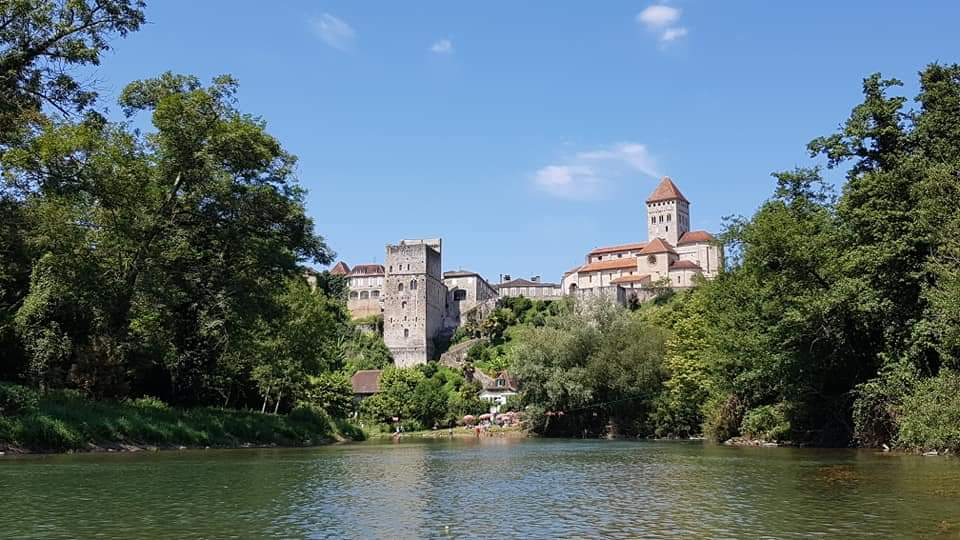

Notre gîte se trouve dans le village médiéval de Sauveterre de Béarn.

Notre gîte se trouve dans le village médiéval de Sauveterre de Béarn.
Sauveterre-de-Béarn, là où les Landes, le Pays Basque et le Béarn se rencontrent.
Le village est situé à 30 minutes de Bayonne, 1h de Biarritz et 1h30 de Pau.